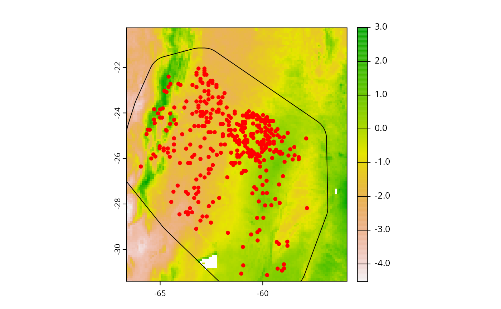

1. Modeling workflow with adm
v01_modelling_workflow.RmdIntroduction
Abundance-based Distribution Models (ADM) are promising approach to construct spatially explicit correlative models of species abundance. The adm package allow users to easily construct and validate those models, meeting researches specific needs. In this vignette, users will learn how to support a modeling workflow with adm, from data preparation to model fitting and prediction.
Preparaing data
In this tutorial, we will model abundace of Cynophalla retusa (Griseb.) Cornejo & Iltis (Capparaceae), a dry biome shrub native to northeastern Argentina, Paraguay, Bolivia, and central Brazil. As predictor variables, we will use the first 7 PC (cumulative viarance > 90%) of a PCA performed with 35 climatic and edaphic variables. We can load all needed data with:
# Load species abundance data
data("cretusa_data")
# Load raster with environmental variables
cretusa_predictors <- system.file("external/cretusa_predictors.tif", package = "adm")
cretusa_predictors <- terra::rast(cretusa_predictors)
names(cretusa_predictors)
#> [1] "PC1" "PC2" "PC3" "PC4" "PC5" "PC6" "PC7"
# Species training area
sp_train_a <- system.file("external/cretusa_calib_area.gpkg", package = "adm")
sp_train_a <- terra::vect(sp_train_a)Let’s explore these data
# Species data
# ?cretusa_data
cretusa_data # species dat
#> # A tibble: 366 × 5
#> species ind_ha x y .part
#> <chr> <int> <dbl> <dbl> <int>
#> 1 Cynophalla retusa 10 -64.5 -22.7 1
#> 2 Cynophalla retusa 10 -64.1 -22.7 1
#> 3 Cynophalla retusa 20 -64.7 -23.1 2
#> 4 Cynophalla retusa 0 -62.6 -23.2 3
#> 5 Cynophalla retusa 0 -61.7 -24.5 3
#> 6 Cynophalla retusa 0 -61.6 -25.0 3
#> 7 Cynophalla retusa 0 -61.2 -24.5 3
#> 8 Cynophalla retusa 0 -64.9 -23.8 2
#> 9 Cynophalla retusa 0 -65.3 -24.4 3
#> 10 Cynophalla retusa 0 -64.7 -24.8 1
#> # ℹ 356 more rows
# Environmental predictors
names(cretusa_predictors)
#> [1] "PC1" "PC2" "PC3" "PC4" "PC5" "PC6" "PC7"
plot(cretusa_predictors)
# Training area
plot(sp_train_a)
plot(cretusa_predictors[[1]])
plot(sp_train_a, add = TRUE)
points(cretusa_data %>% dplyr::select(x, y), col = "red", pch = 20)
In cretusa_data we have 366 georeferenced points for
C. retusa. “ind_ha” column contains abundance measured in
individuals per hectare. “x” and “y” are decimals for longitude and
latitude, respectively. “.part” has folds of a spatial block
partitioning used for cross-validation. Now we need to extract
environmental data from predictors raster. For that, we will use
adm_extract, and columns with x and y coordinates will be
important.
species_data <- adm_extract(
data = cretusa_data, # georeferenced dataframe
x = "x", # spatial x coordinates
y = "y", # spatial y coordinates
env_layer = cretusa_predictors, # raster with environmental variables
variables = NULL, # return data for all layers
filter_na = TRUE
)
species_data
#> # A tibble: 366 × 12
#> species ind_ha x y .part PC1 PC2 PC3 PC4 PC5 PC6
#> <chr> <int> <dbl> <dbl> <int> <dbl> <dbl> <dbl> <dbl> <dbl> <dbl>
#> 1 Cynophall… 10 -64.5 -22.7 1 1.50 -1.28 0.773 0.784 -0.249 -0.559
#> 2 Cynophall… 10 -64.1 -22.7 1 0.750 -1.22 1.36 0.359 -0.434 -0.742
#> 3 Cynophall… 20 -64.7 -23.1 2 1.21 -1.82 1.36 0.336 -0.862 0.0878
#> 4 Cynophall… 0 -62.6 -23.2 3 -1.71 -2.85 -1.34 0.762 -0.745 -1.02
#> 5 Cynophall… 0 -61.7 -24.5 3 -1.65 -2.17 -1.68 0.175 -0.839 -0.637
#> 6 Cynophall… 0 -61.6 -25.0 3 -1.29 -2.35 -1.94 0.614 -0.944 -0.805
#> 7 Cynophall… 0 -61.2 -24.5 3 -0.904 -2.73 -2.30 1.05 -0.604 -0.830
#> 8 Cynophall… 0 -64.9 -23.8 2 0.676 -1.57 0.401 1.54 -0.346 -0.417
#> 9 Cynophall… 0 -65.3 -24.4 3 0.460 -0.795 0.409 2.19 -0.172 -0.249
#> 10 Cynophall… 0 -64.7 -24.8 1 1.18 0.201 0.606 2.65 -0.356 -0.775
#> # ℹ 356 more rows
#> # ℹ 1 more variable: PC7 <dbl>Notice that the new dataframe have one column for each environmental variable (layers in raster). It is possible to extract data from specific layers using “variables” argument in adm_extract. To stabilize Deep Neural Networks training, we will transform response data using “zscore” method.
species_data <- adm_transform(
data = species_data,
variable = "ind_ha",
method = "zscore"
)
species_data %>% dplyr::select(ind_ha, ind_ha_zscore)
#> # A tibble: 366 × 2
#> ind_ha ind_ha_zscore
#> <int> <dbl>
#> 1 10 0.0754
#> 2 10 0.0754
#> 3 20 0.802
#> 4 0 -0.651
#> 5 0 -0.651
#> 6 0 -0.651
#> 7 0 -0.651
#> 8 0 -0.651
#> 9 0 -0.651
#> 10 0 -0.651
#> # ℹ 356 more rowsIt creates a new column called “ind_ha_zscore”, which can be used as response variable.
Tuning models
With all set, we are good to proceed with ADM construction. In this tutorial, we will fine-tune, fit and validate Deep Neural Network (DNN), Generalized Linear Models (GLM) and Random Forest (RAF) models, using tune_abund_ family functions.
RAF
Starting with RAF, the first thing we need to do is to determine values for hyperparameters to be tested. This could be done for all or just part of the hyperparameters. In this example, we will set values for all. This is done creating a grid which will guide the values exploration, what can be easily constructed with expand.grid base function:
raf_grid <- expand.grid(
mtry = seq(from = 1, to = 7, by = 1),
ntree = seq(from = 100, to = 1000, by = 100)
)
head(raf_grid)
#> mtry ntree
#> 1 1 100
#> 2 2 100
#> 3 3 100
#> 4 4 100
#> 5 5 100
#> 6 6 100
nrow(raf_grid) # 70 combinations of these two hyper-paramenters
#> [1] 70For RAF, “mtry” determines the number of variables randomly sampled as candidates at each split. We setted it values to {1, 2, …, 6, 7}. “ntree” determine the number of decision trees to grow. We set its values to {100, 200, …, 900, 1000}. The grid combines every possible pair of values, totalizing 70 combinations (number of rows in “raf_grid”). Now we can use this grid with tune_abund_raf to tune and validate a RAF model:
mraf <- tune_abund_raf(
data = species_data,
response = "ind_ha",
predictors = c("PC1", "PC2", "PC3", "PC4", "PC5", "PC6", "PC7"),
partition = ".part",
predict_part = TRUE, # predictions for every partition will be returned
grid = raf_grid,
metrics = c("corr_pear", "mae"), # metrics to select the best model
n_cores = 4, # number of cores to be used in parallel processing
verbose = FALSE
)
#> Using provided grid.
#> Searching for optimal hyperparameters...
#>
#> Fitting the best model...
#> The best model was achieved with:
#> mtry = 3 and ntree = 100The function returns a list with the following elements:
names(mraf)
#> [1] "model" "predictors" "performance"
#> [4] "performance_part" "predicted_part" "optimal_combination"
#> [7] "all_combinations"“model”: a “randomForest” class object.
class(mraf$model)
#> [1] "randomForest.formula" "randomForest"
mraf$model
#>
#> Call:
#> randomForest(formula = formula1, data = data, mtry = mtry, ntree = ntree, importance = FALSE)
#> Type of random forest: regression
#> Number of trees: 100
#> No. of variables tried at each split: 3
#>
#> Mean of squared residuals: 154.5952
#> % Var explained: 18.24“predictors”: a tibble containing relevant informations about the model fitted.
mraf$predictors
#> # A tibble: 1 × 9
#> model response c1 c2 c3 c4 c5 c6 c7
#> <chr> <chr> <chr> <chr> <chr> <chr> <chr> <chr> <chr>
#> 1 raf ind_ha PC1 PC2 PC3 PC4 PC5 PC6 PC7“performance”: a tibble containing the best models’ performance.
mraf$performance
#> # A tibble: 1 × 13
#> model mae_mean mae_sd corr_spear_mean corr_spear_sd corr_pear_mean
#> <chr> <dbl> <dbl> <dbl> <dbl> <dbl>
#> 1 raf 7.75 1.98 0.408 0.184 0.365
#> # ℹ 7 more variables: corr_pear_sd <dbl>, inter_mean <dbl>, inter_sd <dbl>,
#> # slope_mean <dbl>, slope_sd <dbl>, pdisp_mean <dbl>, pdisp_sd <dbl>“performance_part”: a tibble with the performance of each partition.
mraf$performance_part
#> # A tibble: 3 × 9
#> replica partition model mae corr_spear corr_pear inter slope pdisp
#> <chr> <chr> <chr> <dbl> <dbl> <dbl> <dbl> <dbl> <dbl>
#> 1 1 1 raf 9.92 0.618 0.496 -0.435 1.23 0.404
#> 2 1 2 raf 7.29 0.334 0.331 2.42 0.502 0.659
#> 3 1 3 raf 6.04 0.272 0.268 2.07 0.574 0.467“predicted_part”: predictions for each partition.
mraf$predicted_part %>% head()
#> # A tibble: 6 × 4
#> replica partition observed predicted
#> <chr> <chr> <int> <dbl>
#> 1 1 1 10 1.14
#> 2 1 1 10 3.23
#> 3 1 1 0 0.75
#> 4 1 1 10 7.03
#> 5 1 1 10 7.58
#> 6 1 1 10 6.51“optimal_combination”: the set of hyperparameters values considered the best given the metrics and its performance.
mraf$optimal_combination %>% dplyr::glimpse()
#> Rows: 1
#> Columns: 16
#> $ comb_id <chr> "comb_3"
#> $ mtry <dbl> 3
#> $ ntree <dbl> 100
#> $ model <chr> "raf"
#> $ mae_mean <dbl> 7.752958
#> $ mae_sd <dbl> 1.978733
#> $ corr_spear_mean <dbl> 0.4077742
#> $ corr_spear_sd <dbl> 0.1843192
#> $ corr_pear_mean <dbl> 0.3649869
#> $ corr_pear_sd <dbl> 0.1175491
#> $ inter_mean <dbl> 1.352334
#> $ inter_sd <dbl> 1.557785
#> $ slope_mean <dbl> 0.7677054
#> $ slope_sd <dbl> 0.3987553
#> $ pdisp_mean <dbl> 0.5099857
#> $ pdisp_sd <dbl> 0.132572“all_combinations”: performance for every hyper-parameter combination.
mraf$all_combinations %>% head()
#> # A tibble: 6 × 16
#> comb_id mtry ntree model mae_mean mae_sd corr_spear_mean corr_spear_sd
#> <chr> <dbl> <dbl> <chr> <dbl> <dbl> <dbl> <dbl>
#> 1 comb_1 1 100 raf 7.81 2.02 0.403 0.203
#> 2 comb_2 2 100 raf 7.75 2.03 0.407 0.201
#> 3 comb_3 3 100 raf 7.75 1.98 0.408 0.184
#> 4 comb_4 4 100 raf 7.91 2.07 0.384 0.182
#> 5 comb_5 5 100 raf 7.75 2.03 0.415 0.176
#> 6 comb_6 6 100 raf 7.83 1.99 0.396 0.181
#> # ℹ 8 more variables: corr_pear_mean <dbl>, corr_pear_sd <dbl>,
#> # inter_mean <dbl>, inter_sd <dbl>, slope_mean <dbl>, slope_sd <dbl>,
#> # pdisp_mean <dbl>, pdisp_sd <dbl>GLM
To tune a GLM we perform basically the same steps to tune a RAF, paying attention to GLM singularities. First, we need to construct a grid, just like before. However, GLM needs a “distribution” hyper-parameter that specifies the probability distribution family to be used. Choosing a distribution family needs attention and must be done wisely, but adm provides help via family_selector function. This function compares the response variable range to the gamlss compatible families:
suitable_families <- family_selector(
data = species_data,
response = "ind_ha"
)
#> Response variable is discrete. Both continuous and discrete families will be tested.
#> Selected 61 suitable families for the data.The function returns a tibble with suitable families information. The column “family_call” can be directly used in a grid.
If you are interested in exploring the attributes of the families for
GLM and GAM, you can use the families_bank database. For
further details about family distributions see
?gamlss.dist::gamlss.family.
fm <- system.file("external/families_bank.txt", package = "adm") %>%
utils::read.delim(., header = TRUE, quote = "\t") %>%
dplyr::as_tibble()
fm
#> # A tibble: 87 × 9
#> family_name family_call range no_parameters discrete accepts_zero
#> <chr> <chr> <chr> <int> <int> <int>
#> 1 Beta BE (0,1) 2 0 0
#> 2 Beta one inflated BEOI (0,1] 3 0 0
#> 3 Box-Cox Cole and Green BCCG (0, … 3 0 0
#> 4 Box-Cox Power Exponent… BCPE (0, … 4 0 0
#> 5 Box-Cox-t BCT (0, … 4 0 0
#> 6 Exponential EXP (0, … 1 0 0
#> 7 Gamma GA (0, … 2 0 0
#> 8 Generalized Beta type 1 GB1 (0,1) 4 0 0
#> 9 Generalized Beta type 2 GB2 (0, … 4 0 0
#> 10 Generalized Gamma GG (0, … 3 0 0
#> # ℹ 77 more rows
#> # ℹ 3 more variables: one_restricted <int>, accepts_one <int>,
#> # accepts_negatives <int>In this example, we selected some suitable distributions for use. Now, we can construct the grid:
glm_grid <- list(
distribution = c(
"NO", "NOF", "RG", "TF", "ZAIG", "LQNO", "DEL",
"PIG", "WARING", "YULE", "ZALG", "ZIP", "BNB",
"DBURR12", "ZIBNB", "LO", "PO"
),
poly = c(1, 2, 3),
inter_order = c(0, 1, 2)
) %>%
expand.grid()
# Note that in `distribution` argument it is necessary use the acronyms of `family_call` columnFor GLM, “poly” refers to the polynomials used in model formula, and “inter_order” refers to the interaction order between the variables. Tuning the GLM with the grid:
mglm <- tune_abund_glm(
data = species_data,
response = "ind_ha",
predictors = c("PC1", "PC2", "PC3", "PC4", "PC5", "PC6", "PC7"),
predictors_f = NULL,
partition = ".part",
predict_part = TRUE,
grid = glm_grid,
metrics = c("corr_pear", "mae"),
n_cores = 4,
verbose = FALSE
)
#> Using provided grid.
#> Searching for optimal hyperparameters...
#>
#> Fitting the best model...
#> The best model was achieved with:
#> distribution = PO
#> poly = 2
#> inter_order = 0The output is a list with basically the same elements as tune_abund_raf, so we don’t need to go over it again. The only difference here is the “model”, which is now is a “gamlss” class object.
class(mglm$model)
#> [1] "gamlss" "gam" "glm" "lm"
mglm$model
#>
#> Family: c("PO", "Poisson")
#> Fitting method: RS()
#>
#> Call: gamlss::gamlss(formula = formula1, sigma.formula = sigma_formula,
#> nu.formula = nu_formula, tau.formula = tau_formula,
#> family = family, data = data, control = control_gamlss, trace = FALSE)
#>
#>
#> Mu Coefficients:
#> (Intercept) PC1 PC2 PC3 PC4 PC5
#> -0.539373 0.426482 -1.486044 0.500924 0.074328 0.447586
#> PC6 PC7 I(PC1^2) I(PC2^2) I(PC3^2) I(PC4^2)
#> -1.497579 0.290151 -0.372255 0.004844 0.072316 -0.382721
#> I(PC5^2) I(PC6^2) I(PC7^2)
#> 0.684274 -0.697127 -1.088711
#>
#> Degrees of Freedom for the fit: 15 Residual Deg. of Freedom 351
#> Global Deviance: 4604.94
#> AIC: 4634.94
#> SBC: 4693.48DNN
For DNN, in addition to a grid, the function tune_abund_dnn also needs a list of architectures to test, or a single one. We will use generate_arch_list function for this purpose, . However, here things could get complicated. As DNN architecture aspects such the number and size of layers, batch normalization, and dropout are customizable in adm, many architectures could be generated at once, with all possible combinations between these parameters, resulting in very large lists. To filter this list, users can use select_arch_list to reduce it, sampling the list using the number of parameters as a net complexity measurement. This is highly recommended. Let’s create and select some architectures:
archs <- adm::generate_arch_list(
type = "dnn",
number_of_features = 7, # input/predictor variables
number_of_outputs = 1, # output/response variable
n_layers = c(2, 3, 4), # possible number of layers
n_neurons = c(7, 14, 21), # possible number of neurons on each layer
batch_norm = TRUE, # batch normalization between layers
dropout = 0 # without training dropout
)
number_before <- archs$arch_list %>% length() # 117
archs <- adm::select_arch_list(
arch_list = archs,
type = "dnn",
method = "percentile", # sample by number of parameters percentiles
n_samples = 2, # at least two with each number of layers
min_max = TRUE # keep the more simple and the more complex networks
)
number_after <- archs$arch_list %>% length() # 52
message("From ", number_before, " to ", number_after, " architectures.")
#> From 117 to 52 architectures.However, for the sake of brevity in this tutorial, we will manually reduce even more our architectures list to just a few:
archs$arch_list <- archs$arch_list[seq(from = 1, to = 52, by = 5)]
length(archs$arch_list)
#> [1] 11Now we can construct the grid with hyper-parameters combinations. Note that hyper-parameters values will be tested for each architecture. Therefore user needs to be careful with grid and architecture list sizes.
dnn_grid <- expand.grid(
batch_size = c(64),
validation_patience = c(5),
fitting_patience = c(5),
learning_rate = c(0.005, 0.001, 0.0005),
n_epochs = 200
)
head(dnn_grid)
#> batch_size validation_patience fitting_patience learning_rate n_epochs
#> 1 64 5 5 5e-03 200
#> 2 64 5 5 1e-03 200
#> 3 64 5 5 5e-04 200
nrow(dnn_grid)
#> [1] 3Now we can use the architectures generated and the grid created within the tune_abund_dnn function:
mdnn <- tune_abund_dnn(
data = species_data,
response = "ind_ha_zscore", # using the transformed response
predictors = c("PC1", "PC2", "PC3", "PC4", "PC5", "PC6", "PC7"),
predictors_f = NULL,
partition = ".part",
predict_part = TRUE,
grid = dnn_grid,
architectures = archs,
metrics = c("corr_pear", "mae"),
n_cores = 10,
verbose = FALSE
)
#> Using provided architectures.
#> Using provided grid.
#> Testing 33 combinations.
#> Searching for optimal hyperparameters...
#>
#> Fitting the best model...
#> The best model was achieved with:
#> learning_rate = 0.005
#> n_epochs = 200
#> patience = 5 and 5
#> batch_size = 64
#> arch = 4 layers with 21->7->21->14 neuronsAgain, the output is very similar as before, because they are standardize for all tune_abund_ functions. Now, the “model” element is a “luz_module_fitted” from torch and luz packages.
class(mdnn$model)
#> [1] "luz_module_fitted"
mdnn$model
#> A `luz_module_fitted`
#> ── Time ────────────────────────────────────────────────────────────────────────
#> • Total time: 5.2s
#> • Avg time per training epoch: 206ms
#>
#> ── Results ─────────────────────────────────────────────────────────────────────
#> Metrics observed in the last epoch.
#>
#> ℹ Training:
#> loss: 0.4708
#>
#> ── Model ───────────────────────────────────────────────────────────────────────
#> An `nn_module` containing 939 parameters.
#>
#> ── Modules ─────────────────────────────────────────────────────────────────────
#> • linear1: <nn_linear> #168 parameters
#> • linear2: <nn_linear> #154 parameters
#> • linear3: <nn_linear> #168 parameters
#> • linear4: <nn_linear> #308 parameters
#> • output: <nn_linear> #15 parameters
#> • bn1: <nn_batch_norm1d> #42 parameters
#> • bn2: <nn_batch_norm1d> #14 parameters
#> • bn3: <nn_batch_norm1d> #42 parameters
#> • bn4: <nn_batch_norm1d> #28 parametersSummarizing results
In adm is possible to quick summarize several models evalutions in one dataframe, using adm_summarize function:
adm_summarize(list(mdnn, mraf, mglm))
#> # A tibble: 3 × 14
#> model_ID model mae_mean mae_sd corr_spear_mean corr_spear_sd corr_pear_mean
#> <int> <chr> <dbl> <dbl> <dbl> <dbl> <dbl>
#> 1 1 dnn 0.544 0.174 0.416 0.129 0.393
#> 2 2 raf 7.75 1.98 0.408 0.184 0.365
#> 3 3 glm 7.59 2.17 0.492 0.162 0.427
#> # ℹ 7 more variables: corr_pear_sd <dbl>, inter_mean <dbl>, inter_sd <dbl>,
#> # slope_mean <dbl>, slope_sd <dbl>, pdisp_mean <dbl>, pdisp_sd <dbl>Predicting models
Once we fitted models, we can make spatial predictions of them. The
process is straightforward with the adm_predict function.
It can make predictions for more than one model at once. For
illustration purposes, we will make predictions for a calibration area
delimited by a 100 km buffered minimum convex polygon around species
presence points, but this process is optional.
sp_train_a <- system.file("external/cretusa_calib_area.gpkg", package = "adm")
sp_train_a <- terra::vect(sp_train_a)
preds <- adm::adm_predict(
models = list(mraf, mglm),
pred = cretusa_predictors,
predict_area = sp_train_a,
training_data = species_data,
transform_negative = TRUE # negative predictions will be considered 0
)
#> Predicting list of individual modelsTo predict DNN, we need to pay attention to some detail. As we trained the DNN with tranformed response, if we want it to predict in the original scale, we need to use the “invert_transform” argument in adm_predict:
pred_dnn <- adm_predict(
models = mdnn,
pred = cretusa_predictors,
predict_area = sp_train_a,
training_data = species_data,
transform_negative = TRUE,
invert_transform = c(
method = "zscore",
a = mean(species_data$ind_ha),
b = sd(species_data$ind_ha)
)
)
#> Predicting individual modelsNote: transformation terms varies among tranformation methods. To learn more about it, visit adm_transform documentation. Let’s visualize the predictions:
Exploring models
Finally, we can explore how a variable or a pair of variables affect
the predicted values. adm features univariate and bivariate
Partial Dependence Plots, PDP, and BPDP, respectively. To create PDP we
use p_abund_pdp. PDP illustrates the marginal response of
one predictor. It can provide very relevant information about residuals
and model extrapolation:
# PDP for DNN model
pdp_dnn <- p_abund_pdp(
model = mdnn, # the output of tune_abund_ or fit_abund_
predictors = c("PC1"),
resolution = 100,
resid = TRUE, # plot residuals
training_data = species_data,
invert_transform = c(
method = "zscore", # same as before
a = mean(species_data$ind_ha),
b = sd(species_data$ind_ha)
),
response_name = "ind/ha", # this argument is for aesthetic only, and determines the name of y axis
projection_data = cretusa_predictors, # to visualize extrapolation
rug = TRUE, # rug plot of the predictor
colorl = c("#462777", "#6DCC57"), # projection and training values, respectively
colorp = "black", # residuals colors
alpha = 0.2,
theme = ggplot2::theme_classic() # a ggplot2 theme
)
# PDP for GLM model
pdp_glm <- p_abund_pdp(
model = mglm,
predictors = c("PC1"),
resolution = 100,
resid = TRUE,
training_data = species_data,
response_name = "ind/ha",
projection_data = cretusa_predictors,
rug = TRUE,
colorl = c("#462777", "#6DCC57"),
colorp = "black",
alpha = 0.2,
theme = ggplot2::theme_classic()
)
# PDP for RAF model
pdp_raf <- p_abund_pdp(
model = mraf,
predictors = c("PC1"),
resolution = 100,
resid = TRUE,
training_data = species_data,
response_name = "ind/ha",
projection_data = cretusa_predictors,
rug = TRUE,
colorl = c("#462777", "#6DCC57"),
colorp = "black",
alpha = 0.2,
theme = ggplot2::theme_classic()
)
pdp_dnn
pdp_raf
pdp_glm
BPDP are similar to PDP, but instead of one, it illustrates the
marginal response of a pair of variables. In this example we will use
the first and seventh PC. Note that for p_abund_pdp and
p_abund_bpdp, any subset of predictors can be used in the
“predictors” argument. If “predictors” argument is NULL, functions plot
all variables or variables pair combinations, respectively.
# BPDP for DNN
bpdp_dnn <- p_abund_bpdp(
model = mdnn,
predictors = c("PC1", "PC7"), # a pair of predictors
resolution = 100,
training_data = species_data,
projection_data = cretusa_predictors,
training_boundaries = "convexh", # the shape in which the training boundaries are drawn. Outside of it, its extrapolations
invert_transform = c(
method = "zscore", # same as before
a = mean(species_data$ind_ha),
b = sd(species_data$ind_ha)
),
response_name = "ind/ha",
color_gradient = c(
"#000004", "#1B0A40", "#4A0C69", "#781B6C", "#A42C5F", "#CD4345",
"#EC6824", "#FA990B", "#F7CF3D", "#FCFFA4"
), # gradient for response variable
color_training_boundaries = "white",
theme = ggplot2::theme_classic()
)
# BPDP for GLM
bpdp_glm <- p_abund_bpdp(
model = mglm,
predictors = c("PC1", "PC7"),
resolution = 100,
training_data = species_data,
projection_data = cretusa_predictors,
training_boundaries = "convexh",
response_name = "ind/ha",
color_gradient = c(
"#000004", "#1B0A40", "#4A0C69", "#781B6C", "#A42C5F", "#CD4345",
"#EC6824", "#FA990B", "#F7CF3D", "#FCFFA4"
),
color_training_boundaries = "white",
theme = ggplot2::theme_classic()
)
# BPDP for RAF
bpdp_raf <- p_abund_bpdp(
model = mraf,
predictors = c("PC1", "PC7"),
resolution = 100,
training_data = species_data,
projection_data = cretusa_predictors,
training_boundaries = "convexh",
response_name = "ind/ha",
color_gradient = c(
"#000004", "#1B0A40", "#4A0C69", "#781B6C", "#A42C5F", "#CD4345",
"#EC6824", "#FA990B", "#F7CF3D", "#FCFFA4"
),
color_training_boundaries = "white",
theme = ggplot2::theme_classic()
)
bpdp_dnn
bpdp_raf
bpdp_glm